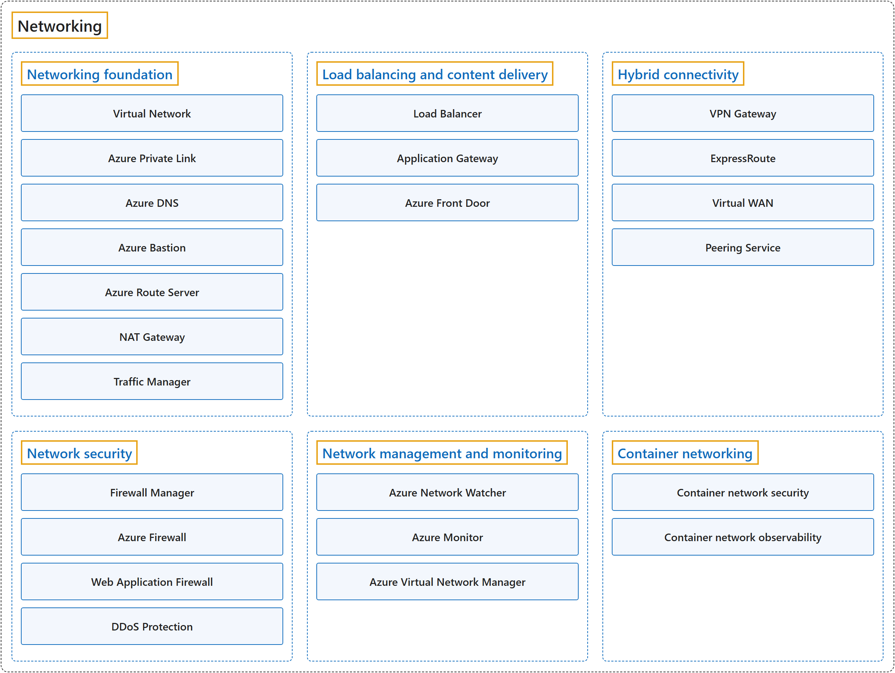

7. Networking
Classification

Glossary
| Term | Definition | 中文翻译 | Source |
|---|---|---|---|
| Networking 网络 |
"You can think of an Azure network as an extension of your on-premises network with resources that link other Azure resources." | 你可以把 Azure 网络看作本地网络的延伸，其中包含链接其他 Azure 资源的资源。 | Microsoft, n.d., "Describe Azure virtual networking" unit, para. 1 |
| Networking foundation 网络基础 |
"Networking foundation: Core connectivity for your resources in Azure." | 网络基础：提供核心连接，供你在 Azure 中的资源使用。 | Microsoft, 2026a, para. 2, list item 1 |
| Load balancing and content delivery 负载均衡和内容分发 |
"Load balancing and content delivery: Manage, distribute, and optimize your applications and workloads." | 负载均衡和内容分发：管理、分发和优化你的应用程序和工作负载。 | Microsoft, 2026a, para. 2, list item 2 |
| Hybrid connectivity 混合连接 |
"Hybrid connectivity: Secure communication to and from your resources in Azure." | 混合连接：实现安全通信，连接进出你在 Azure 中的资源的流量。 | Microsoft, 2026a, para. 2, list item 3 |
| Network security 网络安全 |
"Network security: Protect your web applications and IaaS services from DDoS attacks and malicious actors." | 网络安全：保护你的 Web 应用程序和 IaaS 服务，使其免受 DDoS 攻击和恶意行为者的侵害。 | Microsoft, 2026a, para. 2, list item 4 |
| Network management and monitoring 网络管理和监视 |
"Network management and monitoring: Manage and monitor your network resources." | 网络管理和监视：管理和监视你的网络资源。 | Microsoft, 2026a, para. 2, list item 5 |
| Container networking 容器网络 |
"Container networking: Enhanced security and observability for containerized workloads on Azure Kubernetes Service (AKS)." | 容器网络：提供增强的安全性和可观测性，面向容器化工作负载（运行在 Azure Kubernetes Service (AKS) 上）。 | Microsoft, 2026a, para. 2, list item 6 |
Coverage
| Certification | Skill area |
|---|---|
| AZ-900 Microsoft Azure Fundamentals | Describe Azure architecture and services (35–40%) |
References
- Microsoft. (n.d.). Describe Azure networking services [Training module]. Microsoft Learn. Retrieved October 22, 2026, from https://learn.microsoft.com/en-us/training/modules/describe-azure-networking-services/
- Microsoft. (2026a). Azure networking services overview. Microsoft Learn. https://learn.microsoft.com/en-us/azure/networking/fundamentals/networking-overview
- Microsoft. (2026b). Study guide for Exam AZ-900: Microsoft Azure Fundamentals. Microsoft Learn. https://learn.microsoft.com/en-us/credentials/certifications/resources/study-guides/az-900